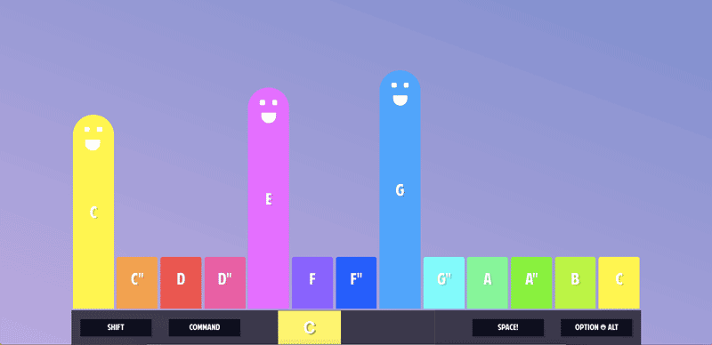
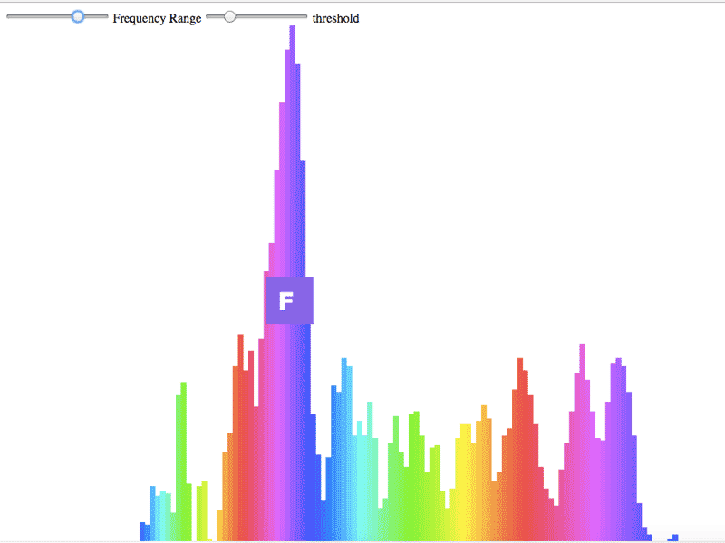
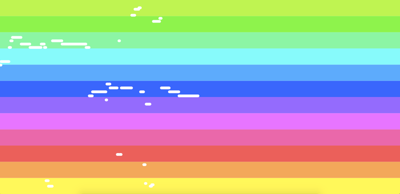

Games that require a Microphone, will NOT work on Safari and IE
Piano FunFun

P l a y
JS
Play the Piano on your Keyboard (keys: ` | 1 | 2 | 3 ...). You can:
+ shift sound slowly or with Octave jumps
+ see the chords you're playing
+ face the music
NEW: >>> Practice with Piano + ChordWorkout
Sounds are triangle oscillators made through the Web Audio API. It's still experimental, not standard webtech... sounds good on Chrome,
but might sound weird on other browsers
RealTime Pitch Detection and Visualization

P l a y
JS
I made this intuitive, realtime spectrogram because all other pitch detection and spectrogram
products on web/mobile were horrible.
Eg bad mappings (hello audacity), dumb Signal Processing code (why dafuq would I need autocorrelation for monophonics, Boris Smus?)
and were generally cluttered (popular YIN algorithm -- 1200ms delay @ 70% accuracy. 1000 lines of C# for jack shit. No thanks).
You know it's bad when you see [frequency <-> note] mappings instead of translator functions (just logarithms, man).
The core pitch detection algorithm is extremly accurate for single harmonic sounds and has almost no delay.
I have to refactor the code tho...it's a mess.
+ Shows pitch and timbre exactly where it occurs in the spectrogram
+ Gives you a strong sense of intervals, fluctations and musical relationships
+ Even if tonedeaf, you see what's up and train your voice and ear.
It will ask you for microphone access. Might not work on all browsers.
Melody Histogram

P l a y
JS
See a histogram of your pitch or monophonic sounds
+ Shows you how volatile your voice is
+ Gives good sense of melody you're playing
+ Challenge yourself to a singing range of one octave
It will ask you for microphone access. Might not work on all browsers.
Could need a longer buffer to correct for pitch jumps, but I moved on
Litte Prince Reloaded
 P l a y
P l a y
THREE.JS
Help Explorer Saint Exupery through the Rainbow Desert
+ Control plane height with pitch (voice/instrument)
Abandoned -- Decided against using three.js for now. Polygon config for plane was borrowed. Will ask for microphone access.
MouseMusic
 P l a y
P l a y
JS
Use your mouse to play with oscillator sounds. Other than most music web/mobile XPs I'm
stricter with the mapping. This has the side-effect of actually learning something.
+ Get a feeling for intervals and pitch
+ See the melody of the last few seconds
Beneath are some Unity Experiments (C#). I made them to learn programming.
They are buggy and badly written, so no more demos.
SpaceShooter 3D

Unity 3D
Same concept as the earlier 2D spaceshooter. Dodge X, shoot Y -- you know the spiel. The pitch controls change with time and are always
part of the major scale.
Image: C# = left, B = shoot; D# = right
I demoed this game in San Francisco at the Noisebridge 10-Year Anniversary after being part of a game dev bootcamp there.
Note Catcher

Unity 3D
I borrowed another disappointing Pitch Detection module.
You collect the colored triangles by playing their corresponding notes. The speed and width of the "player" depend on how consistent the pitch sounds
SpaceShooter

Unity 3D
After two weeks of coding I used the YIN Pitch Detection algorithm to make a
guitar controlled space shooter.
Interval Trainer

Unity 3D
Humble beginnings. The program tests your ear. It plays an interval and you have to guess it.